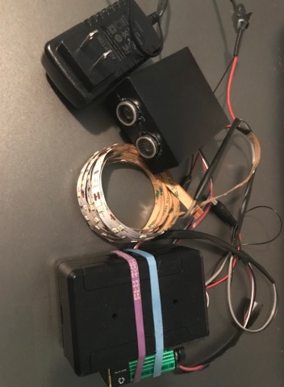

My amazing creation. See below for documentation on my final project!
This is a close up image of how I organized my circuit.
Above is my schematic for my Path Lighter final project.
int trigPin = 11; // Trigger
int echoPin = 12; // Echo
long duration, inches; //Initializes duration and inches variables
int LED = 10; //Sets LED to pin 10
void setup() {
Serial.begin (9600); //Serial Port begin
//Define inputs and outputs
pinMode(trigPin, OUTPUT);
pinMode(echoPin, INPUT);
pinMode(LED, OUTPUT);
}
void loop() {
// The sensor is triggered by a HIGH pulse of 10 or more microseconds.
// Give a short LOW pulse beforehand to ensure a clean HIGH pulse:
digitalWrite(trigPin, LOW);
delayMicroseconds(5);
digitalWrite(trigPin, HIGH);
delayMicroseconds(10);
digitalWrite(trigPin, LOW);
// Read the signal from the sensor: a HIGH pulse whose
// duration is the time (in microseconds) from the sending
// of the ping to the reception of its echo off of an object.
pinMode(echoPin, INPUT);
duration = pulseIn(echoPin, HIGH);
// Convert the time into a distance
inches = (duration/2) / 74; // Divide by 74
//print inches detected onto serial monitor
Serial.print(inches);
Serial.print("in, ");
Serial.println();
delay(250);
//if the sensor detects something further than 2 inches away
//but less than 36 inches away
if (inches > 2 && inches < 36){
//Serial.println("In Range"); //test
digitalWrite(LED, HIGH); //turn on LED's
delay(20000); //keeps the LED's on while the person is walking down the stairs
}
//if LED's don't detect anything within 2 - 80 inches
else {
digitalWrite(LED, LOW); //turn off LED's
//Serial.println("NOO"); //test
}
}